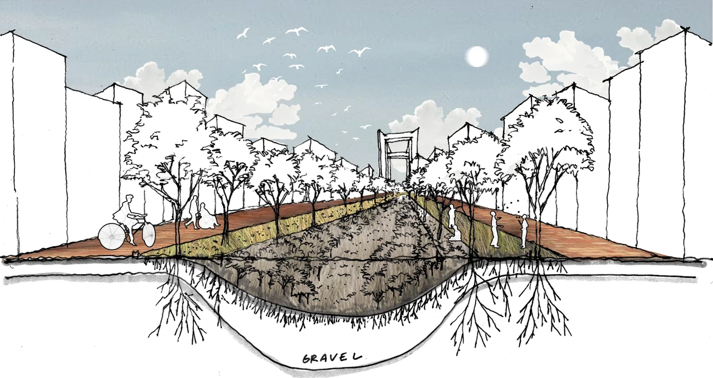
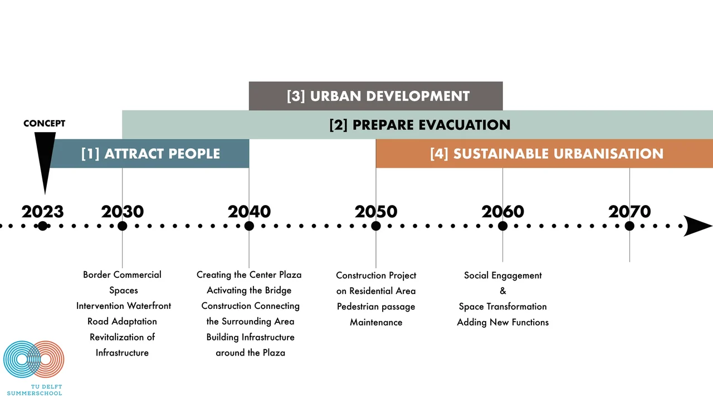

Dordrecht masterplan concept
A masterplan concept addressing residential density, water management, evacuation, mobility and social infrastructure in Dordrecht.
The area is important as an evacuation point in times of emergency. The proposal uses most of the area for residential purposes and addresses effective water management, social capital, restricted car use and adaptive spaces.

Analyses

Development timeline

2023–2040
Attract people
- Border commercial spaces
- Waterfront intervention
- Road adaptation
- Revitalisation of infrastructure
